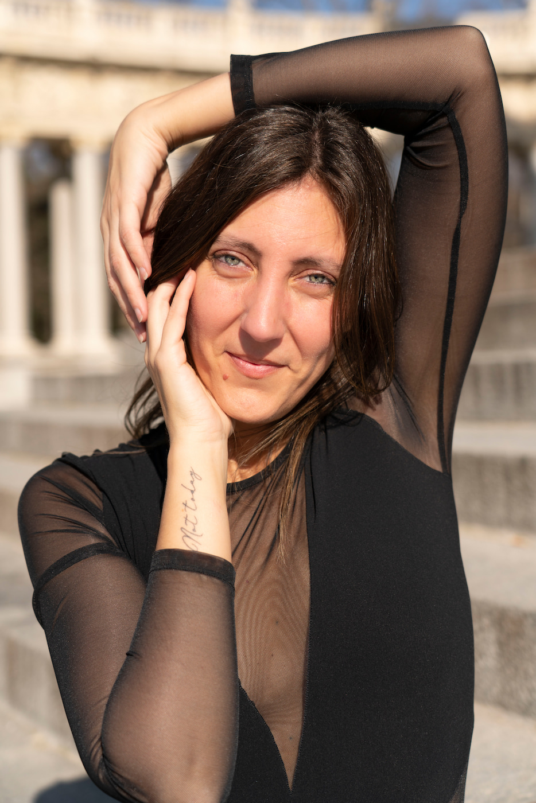
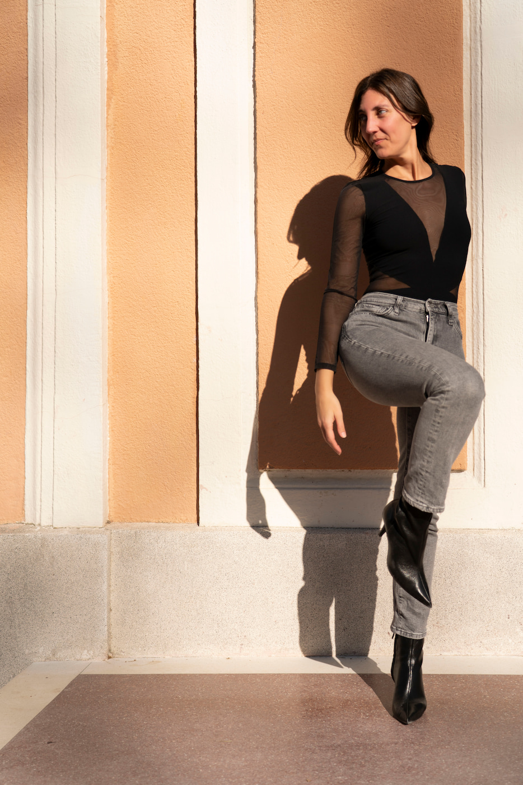
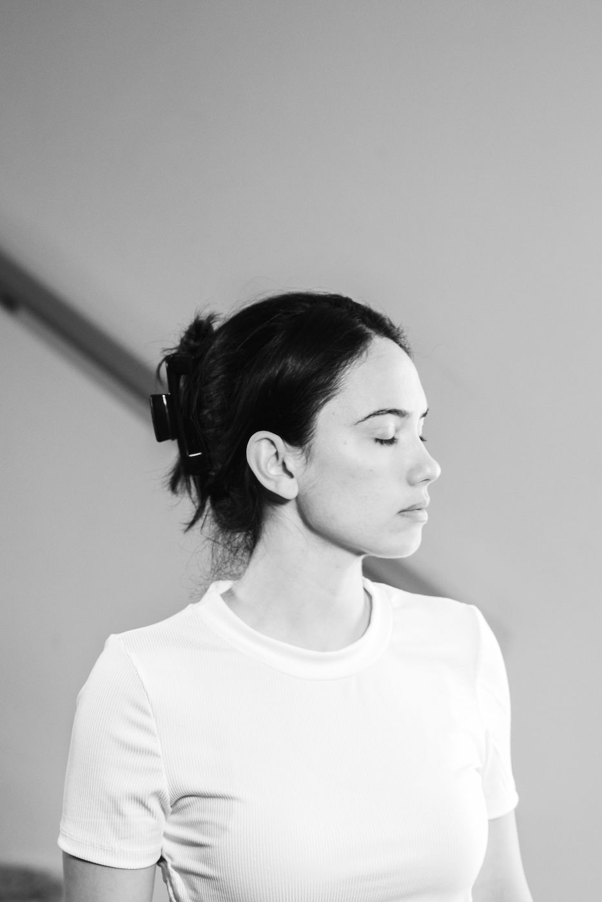
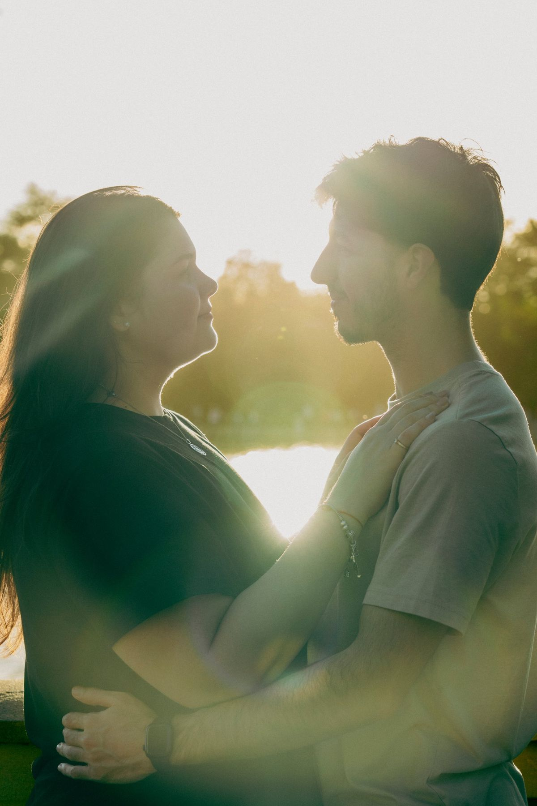
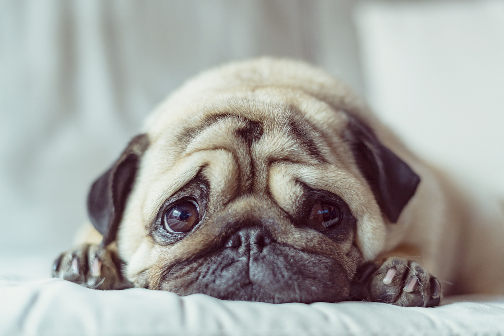

para tu próxima sesiónGuía de poses · calle, estudio, pareja y perro · Otto Kols
Antes de la sesión
Casi todo el mundo llega a una sesión diciendo «es que yo salgo fatal». No es verdad: es que nadie nos ha enseñado qué hacer delante de una cámara.
Esta guía no es para memorizar. Échale un ojo antes de la sesión y quédate con dos o tres ideas que te encajen. El resto lo hacemos juntos.
Y si te da la risa, mejor.

En la calleLa calle te da apoyo: paredes, escalones, barandillas. Úsalos, que para eso están.
Espalda o un hombro contra la pared, el peso en una pierna y la otra relajada o doblada. Nunca los dos pies plantados igual.
Si te sale rígido, cruza un tobillo por delante del otro.
Camina despacio hacia mí, sin mirar a cámara, como si fueras a algún sitio. Repetimos tres o cuatro veces.
Mira al suelo dos metros por delante o a un lado: queda natural.
Codos en las rodillas, espalda un poco inclinada hacia delante, manos juntas o con algo entre ellas.
Las piernas a distinta altura, en un escalón y en el de abajo.
Gírate hacia algo que pase a un lado (un ruido, alguien que llega) y quédate mirándolo un segundo.
Es la pose que más «no pose» parece.

En estudioSin decorado, todo es la postura. Pequeños cambios lo cambian todo.
Gira el cuerpo un poco hacia un lado y vuelve la cara hacia la cámara. Adelanta el hombro más cercano.
Así el cuerpo estiliza y la foto gana volumen.
Lleva la cara un poco hacia delante y luego baja un pelín la barbilla. Se siente raro, pero en la foto define la mandíbula.
Es el truco que más agradecen los retratados.
De perfil a la luz, ojos cerrados o mirando lejos. Pide poco y transmite calma.
Respira hondo antes: los hombros caen solos.
Siéntate en el borde, espalda recta e inclinada hacia la cámara. Un pie más adelantado que el otro.
Inclinarse hacia la cámara da cercanía; echarse atrás, distancia.
La pregunta que todo el mundo hace: «¿Y qué hago con las manos?».
El cuello de la chaqueta, el pelo, un café, las gafas, la correa del bolso. Unas manos ocupadas nunca quedan raras.
Muévelas despacio: entre gesto y gesto sale la foto.
Mano en la cara o en el pelo, pero rozando, sin aplastar la mejilla ni cargar peso.
Dedos relajados y un poco separados.
Mejor la mano de lado que de frente o de dorso: se ve más fina y elegante.
En los bolsillos, solo el pulgar fuera o solo los dedos dentro.

En parejaEn pareja no hace falta posar: hace falta estar juntos. Yo os doy cosas que hacer.
Juntad la frente, ojos cerrados, y respirad a la vez. Dos segundos y ya.
Si os da la risa, mejor: esa es la foto.
Andad de la mano y que uno tire un poco del otro o mire hacia atrás.
Hablad de cualquier cosa mientras: sale solo.
Uno abraza al otro por detrás y apoya la barbilla en su hombro.
Mirad hacia el mismo sitio, fuera de la foto.
Uno le dice algo al oído al otro, y si es una tontería, mejor.
La risa de verdad no se puede fingir.

Con tu perroAquí manda el perro. Lo importante es que esté a gusto, y eso se nota en la foto.
Agáchate o siéntate en el suelo con él. Las fotos desde arriba los hacen pequeños.
Si se sienta a tu lado, apóyale la mano en el lomo.
Tú (o yo) sujetas un premio justo encima del objetivo y él mira a cámara con las orejas arriba.
Un ruidito raro, una vez, funciona igual de bien.
Caminad juntos como cualquier día. Él a su ritmo, tú sin tirar.
Es donde sale cómo sois de verdad.
Abrázalo y dale un beso en la cabeza. Si cierra los ojos, tienes la foto del año.
Solo si a él le gusta: si se agobia, no insistimos.
Y ahora
Soy Otto, fotógrafo en Madrid de retrato, paisaje y fotografía callejera. En las sesiones te voy diciendo qué hacer en cada momento, así que no tienes que acordarte de nada de esto.
Retrato personal · ottokols.es/retrato
Parejas · ottokols.es/parejas
Con tu perro · ottokols.es/mascotas
Actores y actrices · ottokols.es/actores